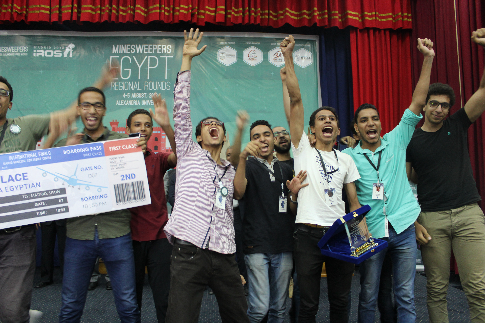
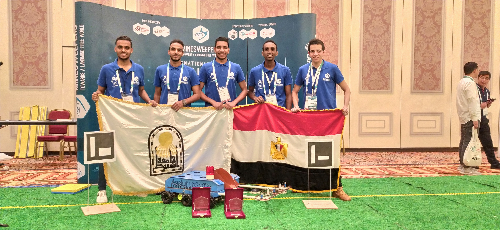

A minesweeper is a robotic ground vehicle that is manually controlled and is able to search an area, detect mines on that area, determine whether the mines are placed on the surface or burried underthe ground. With the help of its gripper, our minesweeper can collect surface mines. After sweeping the whole area, the robot can generate a map of all different types of the mines found.
MINESWEEPER participations
We started participating in Minesweeper competition since 2016 and won 6th in our first time, our second trial was in 2017 and we won 5th place indicating progress from the year before.The next year in 2019 we decided to continue the journey and won 3rd place in the local competition and qualifying for the international in Macau, China. After preparing and making a new robot with advanced features, we were able to win 1st place internationally and "Best Innovative Idea" Award.We intended to join to join in the 2020 edition but it was cancelled due to Covid-19. In 2022, we participated in ARC (Alamein Robotics Championship) and qualified for the international competition, and we're still waiting for the results.


